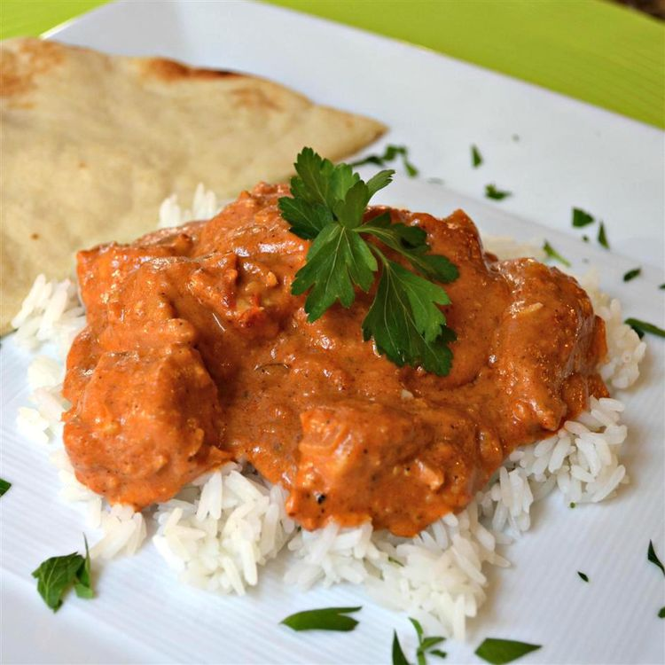

Butter Chicken

Butter Chicken
Butter Chicken, also known as Murgh Makhani, is a popular Indian dish made with tender pieces of chicken simmered in a creamy tomato-based sauce. The dish is rich, flavorful, and perfect for serving with rice, naan, or roti.
Ingredients
- 1 lb boneless chicken, cut into bite-sized pieces
- 1 onion, finely chopped
- 3 garlic cloves, minced
- 1 inch ginger, minced
- 2 tablespoons tomato paste
- 1 cup canned crushed tomatoes
- 1/2 cup heavy cream
- 1/4 cup butter
- 1 teaspoon garam masala
- 1 teaspoon paprika
- 1/2 teaspoon turmeric
- 1/2 teaspoon cumin
- Salt and pepper to taste
Steps
- In a large pan, heat some oil over medium heat and cook the chicken until browned, about 5 minutes. Remove the chicken from the pan and set it aside.
- In the same pan, add the chopped onion, minced garlic, and minced ginger. Cook until the onion is soft and translucent, about 5 minutes.
- Stir in the tomato paste, crushed tomatoes, garam masala, paprika, turmeric, cumin, salt, and pepper. Cook for 2-3 minutes to let the flavors develop.
- Return the chicken to the pan and add the heavy cream and butter. Stir to combine and let the sauce simmer for 10-15 minutes, until the chicken is fully cooked and the sauce has thickened.
- Serve the butter chicken with rice, naan, or roti, garnished with fresh cilantro and a squeeze of lemon juice, if desired. Enjoy!